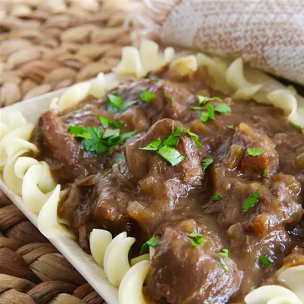

Sauerbraten Beef

Description
Ingredients
- 2 pounds cubed beef stew meat
- 1 cup chopped onion
- 1 cup beef broth
- 1 cup red wine vinegar
- 2 bay leaves
- 3 cups egg noodles
- ¾ cup crushed gingersnap cookies
- 2 tablespoons brown sugar
- 2 tablespoons chopped fresh parsley
Steps
- Combine beef stew meat, onion, beef broth, vinegar, and bay leaves in a slow cooker.
- Cook on Low for 7 to 9 hours.
- Bring a large pot of lightly salted water to a boil. Cook egg noodles in the boiling water, stirring
occasionally until tender yet firm to the bite, 4 to 5 minutes. Drain.
- Remove bay leaves from beef mixture; stir in crushed gingersnaps and brown sugar. Cook beef mixture on Low until
thickened, about 15 minutes. Serve sauerbraten over egg noodles and garnish with parsley.